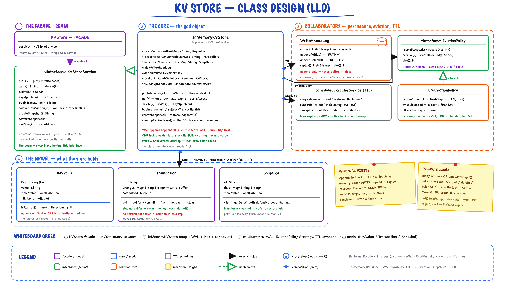
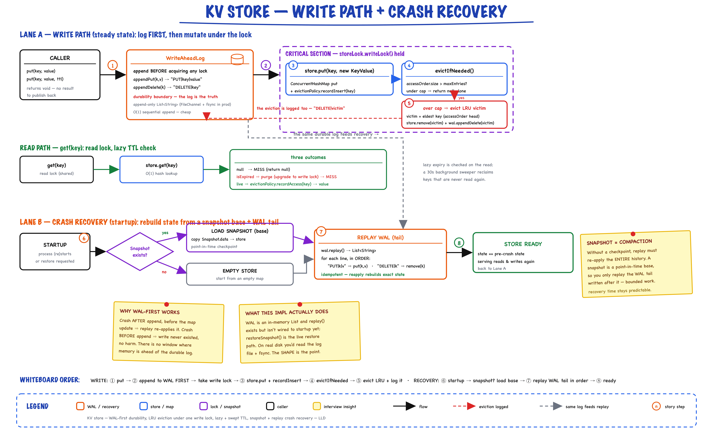
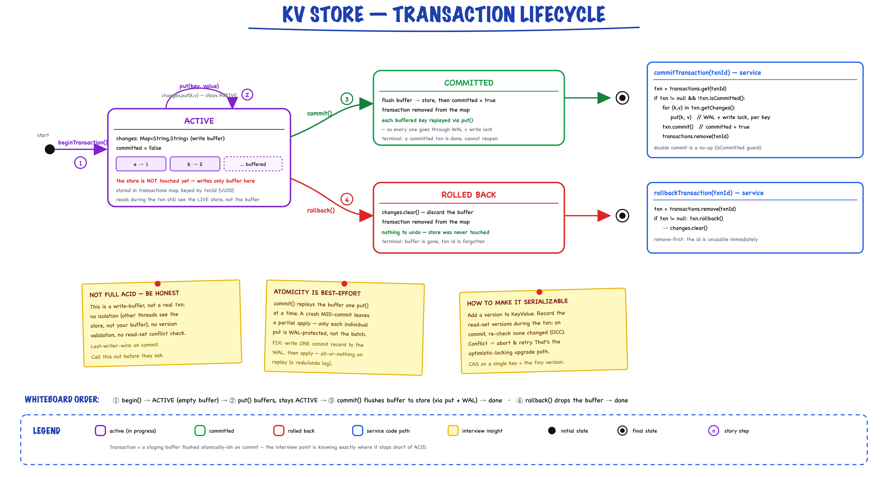

In-Memory KV Store // Redis
SDE3-level low-level design with Strategy, Command, Memento, and Facade patterns. TTL, write-ahead log, snapshots, buffered transactions, and LRU eviction.
01 — Requirements
Functional
- Basic Operations — put(key, value), get(key), delete(key), exists(key)
- TTL (Time-To-Live) — put(key, value, ttlSeconds), lazy expiry on read + 30s background sweep
- Atomic Operations (follow-up, not in src) — increment(key), decrement(key), compareAndSwap(key, expected, new)
- Transactions — beginTransaction(), putInTransaction(txnId, key, value), commitTransaction(txnId), rollbackTransaction(txnId) — buffered writes invisible until commit
- Pattern Matching — keys(pattern) with wildcard support
- Persistence — Snapshots (createSnapshot() / restoreSnapshot(id)), Write-Ahead Log (WriteAheadLog, in-memory); load from disk on restart is a follow-up
Non-Functional
- Performance — O(1) operations, 100K+ QPS
- Thread-Safety — concurrent reads/writes via ConcurrentHashMap
- Memory Efficiency — LRU eviction (LruEvictionPolicy) when maxEntries is exceeded
- Durability — WAL + snapshots for crash recovery
- Availability — 99.99% uptime target
02 — Core Entities
| Entity | Type | Key Fields |
|---|---|---|
| KeyValue | Value Object | key, value, timestamp, ttl — isExpired() checks now > timestamp + ttl |
| WriteAheadLog | Component | entries (synchronized List<String> of PUT|key|value / DELETE|key) — appendPut, appendDelete, replay(), size() |
| Transaction | Entity | id, changes (Map<String,String>), committed — buffered write set applied on commit |
| Snapshot | Entity | id, data (Map<String,String>), timestamp — full in-memory dump for restore |
| CacheStats | Value Object | hits, misses, evictions — getHitRate() = hits / (hits + misses) (model only; not wired into InMemoryKVStore yet) |
| LruEvictionPolicy | Strategy Impl | maxEntries, access-order LinkedHashMap<String, Boolean> — eldest key = LRU victim |
Interfaces
| Interface | Purpose |
|---|---|
| KVStore | Facade class (not an interface): wraps a KVStoreService, default new InMemoryKVStore(maxEntries); exposes service() |
| KVStoreService | Full service: basic ops + TTL + transactions + snapshots + pattern keys + walSize() / shutdown() |
| EvictionPolicy | Strategy: evictIfNeeded() returns key to remove (or null), recordAccess(key) / recordInsert(key) / remove(key) track usage |
| PersistenceManager | Pluggable persistence: save(data), load() (interface only; no impl wired in) |
03 — Design Patterns
Five patterns, each earning its place in the design.
Strategy Pattern
EvictionPolicy interface with an LruEvictionPolicy implementation (LFU is a follow-up). Pluggable — swap eviction algorithms without changing the store. Same seam exists for PersistenceManager.
Command Pattern
WAL records (PUT|key|value, DELETE|key) are replayable commands. Each mutation is logged before applying. On crash recovery, replay the log to rebuild state.
Memento Pattern
Snapshot captures a full copy of the store at a point in time. Restore reverts to that saved state. Periodic background snapshots + WAL replay = full durability.
Facade Pattern
KVStore wraps a KVStoreService (default InMemoryKVStore) — one entry point for clients. Inject a different service via new KVStore(service).
Observer Pattern (follow-up)
Not in src yet. Key expiry events would trigger notifications to registered listeners. Subscribers react to expiration without polling. Decouples TTL cleanup from business logic.
04 — Class Diagram

The full picture: KVStore facade → KVStoreService seam → InMemoryKVStore (the god object) holding a ConcurrentHashMap, a WriteAheadLog, an EvictionPolicy Strategy (LruEvictionPolicy), a ReadWriteLock and a TTL ScheduledExecutorService → the KeyValue / Transaction / Snapshot model. Note the honest annotations: WAL is an in-memory list here, and KeyValue has no version field (CAS is aspirational).
05 — Get / Put / Delete
All O(1). ConcurrentHashMap provides lock-free reads and segment-level locking for writes. WAL append is sequential I/O (fast).
put(key, value)
storeLock.writeLock().lock() // 1. Write to WAL first (durability before visibility; under the lock so log order == apply order) wal.appendPut(key, value) // 2. Update in-memory store + LRU order kv = new KeyValue(key, value) // kv.setTtl(ttlSeconds) if given store.put(key, kv) evictionPolicy.recordInsert(key) // 3. Evict LRU if over maxEntries (log the eviction too) evicted = evictionPolicy.evictIfNeeded() if evicted != null: wal.appendDelete(evicted) store.remove(evicted) storeLock.writeLock().unlock()
Time: O(1) memory + O(1) amortized WAL · Space: O(1)
get(key)
kv = store.get(key) // under storeLock.readLock() if kv == null: return null // miss if kv.isExpired(): // lazy expiration: drop read lock, take write lock, re-check store.remove(key) evictionPolicy.remove(key) return null // never return an expired value evictionPolicy.recordAccess(key) // update LRU tracking return kv.getValue()
Time: O(1) · Space: O(1) · Lazy TTL check on every read
delete(key)
// under storeLock.writeLock() // 1. Log deletion to WAL wal.appendDelete(key) // 2. Remove from memory + LRU tracking store.remove(key) evictionPolicy.remove(key)
Actual Implementation (InMemoryKVStore)
// put(key, value) and put(key, value, ttlSeconds) both delegate here private void putInternal(String key, String value, Long ttlSeconds) { storeLock.writeLock().lock(); try { wal.appendPut(key, value); // log before apply KeyValue kv = new KeyValue(key, value); if (ttlSeconds != null) kv.setTtl(ttlSeconds); store.put(key, kv); evictionPolicy.recordInsert(key); String evicted = evictionPolicy.evictIfNeeded(); if (evicted != null) { wal.appendDelete(evicted); store.remove(evicted); } } finally { storeLock.writeLock().unlock(); } } public String get(String key) { storeLock.readLock().lock(); try { KeyValue kv = store.get(key); if (kv == null) return null; if (!kv.isExpired()) { evictionPolicy.recordAccess(key); return kv.getValue(); } } finally { storeLock.readLock().unlock(); } // Expired. RW locks can't upgrade: re-acquire as writer and re-check storeLock.writeLock().lock(); try { KeyValue kv = store.get(key); if (kv != null && kv.isExpired()) { store.remove(key); evictionPolicy.remove(key); } return null; } finally { storeLock.writeLock().unlock(); } } public void delete(String key) { storeLock.writeLock().lock(); try { wal.appendDelete(key); store.remove(key); evictionPolicy.remove(key); } finally { storeLock.writeLock().unlock(); } }
06 — TTL Expiration
Two-pronged strategy: Lazy expiration on read (cheap, always correct) + scheduled background cleanup (prevents memory leaks from unread keys).
put(key, value, ttlSeconds) + Background Sweep
// 1. TTL is just metadata on the KeyValue
KeyValue kv = new KeyValue(key, value); // timestamp = now
kv.setTtl(ttlSeconds);
store.put(key, kv); // via putInternal (WAL + write lock)
// 2. One daemon thread sweeps every 30s (started in the constructor)
ttlCleanupScheduler.scheduleAtFixedRate(new Runnable() {
public void run() { cleanupExpiredKeys(); }
}, 30, 30, TimeUnit.SECONDS);
private void cleanupExpiredKeys() { // holds storeLock.writeLock()
Iterator<Map.Entry<String, KeyValue>> it = store.entrySet().iterator();
while (it.hasNext()) {
Map.Entry<String, KeyValue> e = it.next();
if (e.getValue().isExpired()) {
it.remove();
evictionPolicy.remove(e.getKey());
}
}
}
put: O(1) · sweep: O(n) every 30s · shutdown() stops the sweeper
KeyValue.isExpired()
public boolean isExpired() { if (ttl == null) return false; return LocalDateTime.now().isAfter(timestamp.plusSeconds(ttl)); }
07 — Persistence (WAL + Snapshots)
Belt and suspenders. WAL guarantees no data loss between snapshots. Snapshots provide fast full-state recovery. Together: replay WAL from last snapshot.
Write-Ahead Log (WAL)
Every mutation is logged before being applied to memory. Here the log is an in-memory list; swapping it for a sequential file append is the durability follow-up. On crash, replay the log to rebuild state.
public final class WriteAheadLog { // each line: OP|key|value private final List<String> entries = Collections.synchronizedList(new ArrayList<String>()); public void appendPut(String key, String value) { entries.add("PUT|" + key + "|" + value); } public void appendDelete(String key) { entries.add("DELETE|" + key); } public List<String> replay() { // crash recovery: copy in order synchronized (entries) { return new ArrayList<String>(entries); } } public int size() { return entries.size(); } }
| Property | Detail |
|---|---|
| Write pattern | Append-only PUT|key|value / DELETE|key lines |
| Durability | In-memory today; follow-up: file append + fsync (configurable) |
| Recovery | replay() returns entries in order; replay from last checkpoint |
| Rotation | Follow-up: truncate after successful snapshot |
Snapshots (Memento)
Periodic full dump of in-memory state. Defensive copy ensures snapshot isolation.
public class Snapshot { private final String id; private final Map<String, String> data; private final LocalDateTime timestamp; public Snapshot(String id, Map<String, String> data) { this.id = id; this.data = new HashMap<>(data); // defensive copy this.timestamp = LocalDateTime.now(); } }
Write Path & Crash Recovery

Two lanes over one durable log. Write path: put appends to the WAL first, then takes the write lock to update the map, record LRU order, and evict the eldest key if over capacity (logging that eviction too). Crash recovery: on startup load the latest Snapshot as a base, then replay the WAL tail in order (idempotent) to reach the exact pre-crash state. The read path checks TTL lazily on get, backed by a 30s sweeper.
createSnapshot & restoreSnapshot
public String createSnapshot() { storeLock.readLock().lock(); try { String snapshotId = UUID.randomUUID().toString(); Map<String, String> data = new HashMap<String, String>(); for (Map.Entry<String, KeyValue> e : store.entrySet()) if (!e.getValue().isExpired()) // skip expired keys data.put(e.getKey(), e.getValue().getValue()); snapshots.put(snapshotId, new Snapshot(snapshotId, data)); return snapshotId; } finally { storeLock.readLock().unlock(); } } public void restoreSnapshot(String snapshotId) { Snapshot snapshot = snapshots.get(snapshotId); if (snapshot == null) return; storeLock.writeLock().lock(); try { store.clear(); for (Map.Entry<String, String> e : snapshot.getData().entrySet()) { store.put(e.getKey(), new KeyValue(e.getKey(), e.getValue())); evictionPolicy.recordInsert(e.getKey()); } } finally { storeLock.writeLock().unlock(); } }
08 — Atomic Operations & CAS (Follow-up)
Hypothetical follow-up — not in src. InMemoryKVStore has no CAS, increment, or version field today. The natural extension reuses the existing storeLock write lock so compare + WAL + apply happen as one step.
Compare-And-Swap (CAS) — hypothetical
// HYPOTHETICAL: would be added to InMemoryKVStore
public boolean compareAndSwap(String key, String expected, String newValue) {
storeLock.writeLock().lock();
try {
KeyValue kv = store.get(key);
String current = (kv == null || kv.isExpired()) ? null : kv.getValue();
if (!Objects.equals(current, expected))
return false; // CAS failed -- stale read
wal.appendPut(key, newValue); // log before apply
store.put(key, new KeyValue(key, newValue));
evictionPolicy.recordInsert(key);
return true;
} finally {
storeLock.writeLock().unlock();
}
}
Time: O(1) · Space: O(1) · Lock-free variant needs a version field + ConcurrentHashMap.replace(key, old, new)
Increment / Decrement — hypothetical
// HYPOTHETICAL: atomic increment using a CAS loop public long increment(String key) { while (true) { String current = get(key); long val = (current == null) ? 0 : Long.parseLong(current); String next = String.valueOf(val + 1); if (compareAndSwap(key, current, next)) return val + 1; // CAS failed, retry with fresh value } }
09 — Transactions
Write buffering. putInTransaction buffers writes in the transaction's changes map. On commit, apply each through put(). Rollback = discard the buffer. Read-set validation (optimistic concurrency) is a follow-up.
Transaction Lifecycle

A staging buffer, not full ACID. beginTransaction() creates an ACTIVE txn; put buffers into a changes map (the store is untouched); commit() flushes each buffered key via put() (so each goes through the WAL + write lock) then marks it done; rollback() just discards the buffer. The stickies call out exactly where this stops short of ACID (no isolation, best-effort atomicity) and how to upgrade it to optimistic concurrency with a version field.
Transaction Class
public class Transaction { private final String id; private final Map<String, String> changes; // write buffer private boolean committed; public void put(String key, String value) { changes.put(key, value); } public void commit() { committed = true; } public void rollback() { changes.clear(); } }
Commit Algorithm (Optimistic Locking) — hypothetical follow-up
// HYPOTHETICAL: needs a version field on KeyValue and a readSet on Transaction Algorithm: CommitTransaction(txn) storeLock.writeLock().lock() // Phase 1: Validate (check versions haven't changed) for each (key, versionSeen) in txn.readSet: if store.get(key).version != versionSeen: return false // read conflict, abort // Phase 2 + 3: log, then apply (per key) for each (key, value) in txn.getChanges(): wal.appendPut(key, value) store.put(key, new KeyValue(key, value)) txn.commit() storeLock.writeLock().unlock() return true
Time: O(w + r) where w = writes, r = reads · Space: O(w + r)
Service-Level Transaction Methods
public String beginTransaction() { String txnId = UUID.randomUUID().toString(); transactions.put(txnId, new Transaction(txnId)); return txnId; } public void putInTransaction(String txnId, String key, String value) { Transaction txn = transactions.get(txnId); if (txn == null) throw new IllegalArgumentException("unknown or already-finished transaction: " + txnId); txn.put(key, value); // invisible until commit } public void commitTransaction(String txnId) { Transaction txn = transactions.get(txnId); if (txn != null && !txn.isCommitted()) { for (Map.Entry<String,String> e : txn.getChanges().entrySet()) put(e.getKey(), e.getValue()); // each key: WAL + write lock txn.commit(); transactions.remove(txnId); } } public void rollbackTransaction(String txnId) { Transaction txn = transactions.remove(txnId); if (txn != null) txn.rollback(); }
10 — Thread Safety
| Mechanism | Where | Why |
|---|---|---|
| ConcurrentHashMap | store, transactions, snapshots | Lock-free reads, segment-level write locking. O(1) ops stay O(1) under concurrency. |
| ReentrantReadWriteLock storeLock | InMemoryKVStore | Read lock: get, keys, createSnapshot. Write lock: put/delete (WAL append + map + LRU as one step), TTL sweep, restoreSnapshot. No read→write upgrade: expired get releases, re-acquires as writer, re-checks. |
| synchronized methods | LruEvictionPolicy | Access-order LinkedHashMap mutates on every read; many readers hold the read lock concurrently, so the policy guards itself. |
| ScheduledExecutorService | TTL sweep | Single daemon thread (kvstore-ttl-cleanup) runs cleanupExpiredKeys() every 30s. |
| Collections.synchronizedList | WriteAheadLog.entries | Safe concurrent appends; replay() copies under the list's monitor. |
| HashMap (defensive copy) | Snapshot, Transaction.getChanges() | Isolation. Snapshot data can't be mutated by ongoing writes. |
"ConcurrentHashMap gives us lock-free reads at the cost of no total ordering. For a KV store, this is the right tradeoff — we optimize for throughput over global consistency."
11 — Service API
What to write on the whiteboard first.
interface KVStoreService { // Basic CRUD void put(String key, String value); void put(String key, String value, long ttlSeconds); String get(String key); void delete(String key); boolean exists(String key); // Pattern matching List<String> keys(String pattern); // Transactions String beginTransaction(); void putInTransaction(String txnId, String key, String value); void commitTransaction(String txnId); void rollbackTransaction(String txnId); // Snapshots String createSnapshot(); void restoreSnapshot(String snapshotId); // Ops int walSize(); void shutdown(); // stops the TTL sweeper }
Facade (KVStore)
public final class KVStore { private final KVStoreService service; public KVStore() { this(new InMemoryKVStore()); } // 1000 entries public KVStore(int maxEntries) { this(new InMemoryKVStore(maxEntries)); } public KVStore(KVStoreService service) { this.service = service; } public KVStoreService service() { return service; } }
Extended API (hypothetical follow-ups — not in src)
// Atomic Operations long increment(String key); long decrement(String key); boolean compareAndSwap(String key, String expected, String newValue); // TTL Management long getTTL(String key); void persist(String key); // remove TTL // Persistence void save(String path); // snapshot to disk void load(String path); // restore from disk
12 — Happy Path Flow
Trace this end-to-end in the interview.
store.putInTransaction(txnId, "key1", "val1"); store.putInTransaction(txnId, "key2", "val2")
store.commitTransaction(txnId)
13 — Key Data Structures
// Primary store -- ConcurrentHashMap for thread safety Map<String, KeyValue> store = new ConcurrentHashMap<>(); // Active transactions -- keyed by txnId Map<String, Transaction> transactions = new ConcurrentHashMap<>(); // Snapshots -- keyed by snapshotId Map<String, Snapshot> snapshots = new ConcurrentHashMap<>(); // TTL sweeper -- one daemon thread, cleanupExpiredKeys() every 30s ScheduledExecutorService ttlCleanupScheduler; // Guards store + WAL + eviction as one unit ReadWriteLock storeLock = new ReentrantReadWriteLock(); // Eviction (Strategy pattern) EvictionPolicy evictionPolicy = new LruEvictionPolicy(maxEntries); // LRU internals (inside LruEvictionPolicy) LinkedHashMap<String, Boolean> accessOrder = new LinkedHashMap<String, Boolean>(maxEntries, 0.75f, true); // access-ordered, eldest = LRU // Persistence WriteAheadLog wal = new WriteAheadLog(); // append-only OP|key|value lines // Defined but not wired into InMemoryKVStore yet: // PersistenceManager (save/load), CacheStats (hits, misses, evictions, getHitRate())
14 — Interview Follow-up Q&A
Why ConcurrentHashMap instead of synchronized HashMap?
How does lazy vs active TTL expiration work?
How would you handle memory limits and eviction?
Why WAL before memory write?
How do snapshots and WAL work together?
How would you implement LRU eviction?
How would you scale beyond a single node?
How does CAS enable lock-free concurrency?
How would you handle transaction isolation?
Why defensive copies in Snapshot and Transaction?
How would you support complex data types like Lists and Sets?
How would you improve write performance?
What real-world extensions would you add?
15 — Package Structure
kvstore/ ├── KVStore.java -- facade over KVStoreService ├── KVStoreDemo.java -- interview demo ├── service/ │ ├── KVStoreService.java -- full service interface │ └── impl/ │ └── InMemoryKVStore.java -- CHM + RW lock + WAL + TTL sweeper ├── model/ │ ├── KeyValue.java -- value + TTL + timestamp │ ├── Transaction.java -- buffered write set │ └── CacheStats.java -- hits, misses, evictions ├── eviction/ │ ├── EvictionPolicy.java -- strategy interface │ └── LruEvictionPolicy.java -- LinkedHashMap access order ├── persistence/ │ ├── PersistenceManager.java -- save/load interface │ └── WriteAheadLog.java -- append-only OP|key|value log └── snapshot/ └── Snapshot.java -- memento (defensive copy)
16 — Patterns Summary
| Pattern | Where | Why |
|---|---|---|
| Strategy | EvictionPolicy → LruEvictionPolicy | Swap eviction algorithms without changing store |
| Command | WriteAheadLog records (PUT, DELETE) | Replayable mutations for crash recovery |
| Memento | Snapshot captures full state | Point-in-time restore with defensive copies |
| Facade | KVStore → KVStoreService | One entry point; swap the service implementation |
| Observer | Key expiry events (follow-up) | Decouple expiration notification from cleanup |
| Repository | ConcurrentHashMap stores | In-memory, swap for Redis/DB |
| Value Object | KeyValue, Snapshot | Data carriers with timestamp + TTL |
12 files · O(1) everything · ConcurrentHashMap + WAL + Snapshots